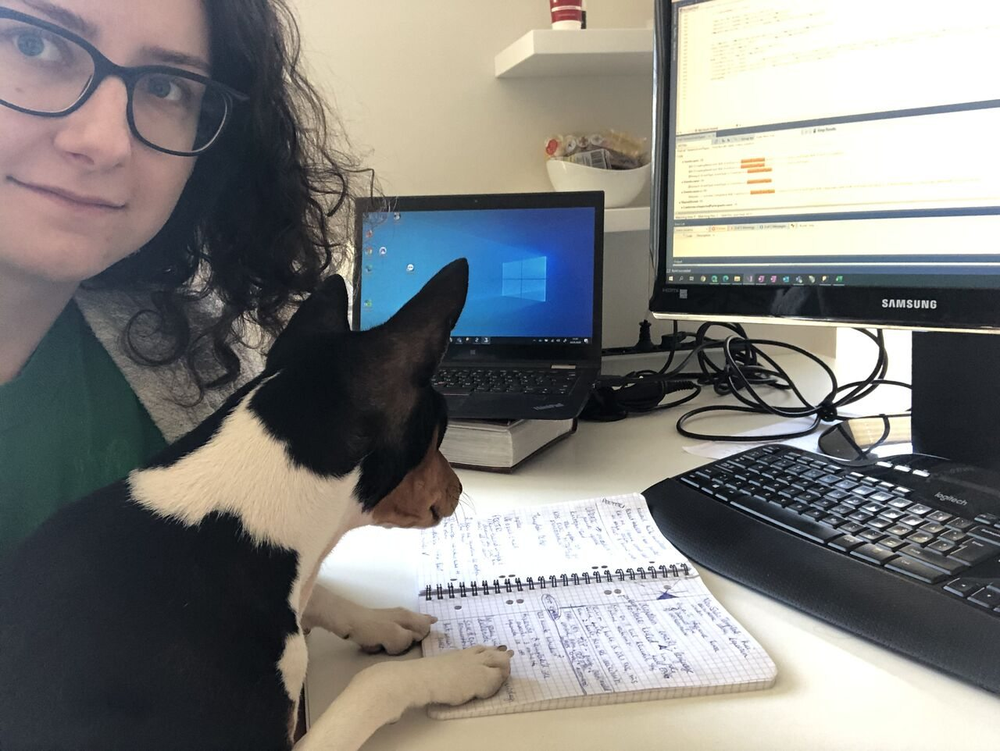
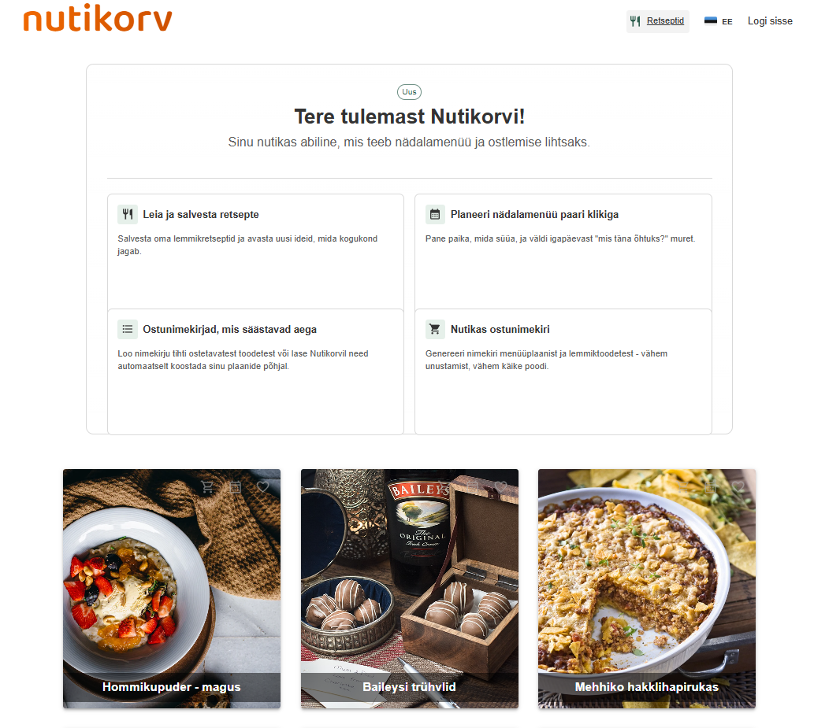

Tead, et AI võiks aidata…
…aga sul pole aega võrrelda kümmet tööriista ja vaadata tundide kaupa õpetusi.
AI teejuht naisettevõtjale
Rahulik ja praktiline 1:1, et leida sinu ettevõttele mõistlik AI- või automaatikalahendus, ja see päriselt tööle panna. Ilma tehnilise pläma ja lõputu katsetamiseta.
Alustame sinu igapäevasest ülesandest, mitte tööriistast. Vahel on õige lahendus ChatGPT. Vahel aitab telefoni automation, lihtne AI-skill või parem töökorraldus. Ja vahel ei ole automatiseerimine üldse mõistlik.
Valime tööriista probleemi, mitte moe järgi.
Kas see kõlab tuttavalt?
…aga sul pole aega võrrelda kümmet tööriista ja vaadata tundide kaupa õpetusi.
…aga tulemused on juhuslikud või ühekordsed ja sa ei tea, kuidas seda oma pärisellu sobitada.
…mida teed endiselt käsitsi, kuigi tunned, et seda peaks saama lihtsamalt.
…ja sa ei taha klientide või ettevõtte andmeid teadmatusest valesse kohta sisestada.
See teenus on sulle, kui tahad praktilist tulemust, mitte järjekordset AI-inspiratsiooniloengut.
Praktilised näited
Näited sõltuvad alati sinu enda tööst. Me ei ehita midagi ainult sellepärast, et see kõlab tehniliselt põnevalt.
Väike algus on päris algus
Vahel on esimene hea automaatika hoopis pakkimisnimekiri, regulaarne meeldetuletus või telefoniga idee kiire salvestamine. Väike lahendus aitab tööriista turvaliselt proovida, aga kohtumisel otsime esimese võidu sinu päris tööst.
Mulle meeldib märgata väikseid igapäevaseid hõõrumisi ja mõelda: kas seda saaks lihtsamalt? Sama mõtteviisi toon sinu ettevõttesse.
Koostöö
Sa ei pea teadma, millist tööriista vaja on. Alustame sellest, mis sinu töös praegu liiga palju aega või energiat võtab.
Vaatame koos üle võimaliku kasu, keerukuse, kulud ja andmeriskid.
Seadistame lahenduse sinu päris töö järgi ja paneme kirja, kuidas seda hiljem kasutada või edasi arendada.
Kui sinu ülesanne ei sobi AI või automaatika jaoks, ütlen seda enne, kui hakkame midagi ehitama.
See ei ole üldine AI-koolitus. Võtame ühe sinu päris tööülesande ja töötame selle kallal koos. Vajadusel tutvustan tööriista, kuid eesmärk on jõuda kasutatava lahenduseni.

Minust
Mul on umbes seitse aastat tarkvaraarenduse kogemust. Kasutan AI-d oma töös ning oskan hinnata ka seda, millal lihtsam lahendus on parem kui keeruline süsteem.
Minu töö on alati olnud tehnilise ja mittetehnilise maailma ühendamine. Sa ei pea oskama õigeid tehnilisi küsimusi esitada - nende lahtimõtestamine on osa minu tööst.
Olen ehitanud Nutikorvi nullist päris tooteks. See on õpetanud mulle, et hea lahendus ei pea olema kõige tehnilisem. See peab olema arusaadav, kasutatav ja päris elus hallatav.
Vahel on parem vastus kontrollnimekiri, telefoni automation või lihtsalt selgem töökorraldus.
Oma projekti kogemus
Nutikorv ühendab retseptide leidmise ja salvestamise, nädalamenüü planeerimise ning menüü põhjal ostunimekirja loomise üheks praktiliseks töövahendiks. Selle loomisel olen pidanud ühendama kasutaja vajadused, tehnilised võimalused ja väikese ettevõtte reaalsuse. Sama lähenemist kasutan ka sinu töövoo puhul: lahendus peab olema mitte ainult võimalik, vaid arusaadav ja päriselt kasutatav.
Vaata nutikorviLisaks olen oma elus automatiseerinud kümneid protsesse, et hoida enda aega kokku rutiinsetelt tegevustelt. Tahan seda kogemust pakkuda ka teistele.

Konkreetne tulemus
Eesmärk ei ole teha kõike korraga. Eesmärk on saada esimene päris võit.
Teenused
3 kohtumist · 315 €
Sobib töövoole, mida on vaja päris töös proovida ja seejärel parandada. Valime prioriteedid, seadistame ühe või kaks töövoogu ning täiendame neid kasutuskogemuse põhjal.
90 minutit · 110 €
Valime ühe päris tööülesande ja paneme selle AI või lihtsa automaatika abil tööle. Lahkud töötava esimese lahenduse ja lühikese kasutusjuhisega.
Alusta ühest ülesandestOlemasolevatele klientidele alates 150 €/kuu
Sobib siis, kui põhilahendus on juba olemas ja soovid kord kuus otsuste, muudatuste või uute küsimuste juures tuge.
Uuri jätkutoe kohtaTöö piirid lepime enne alustamist kokku. Kolmandate osapoolte teenused, nt ChatGPT kuine pakett jms, ei sisaldu hinnas.
OÜ Adagio ei ole käibemaksukohustuslane.
Korduma kippuvad küsimused
Ei. Võime alustada täiesti algusest. Olulisem on see, et sul on mõni päris ülesanne, mida soovid lihtsamaks teha.
Ühest sessioonist piisab tavaliselt ühe selgelt piiritletud esimese lahenduse jaoks. Suurem või mitmeosaline töövoog võib vajada testimist ja järgmist kohtumist.
Teeme seda koos, sest lahendus peab sobima sinu tööviisi ja jääma sulle arusaadavaks. Tehnilisemad seadistused võin kohtumise käigus ise ära teha, kuid sina säilitad kontrolli oma kontode ja info üle.
Jah, mõnel tööriistal võib olla kuutasu või kasutuspõhine hind. Enne valimist vaatame selle koos üle ning eelistame võimalusel lihtsat ja mõistliku hinnaga lahendust.
Vaatame enne seadistamist üle, millist infot võib valitud tööriista sisestada, millist mitte ja kas andmeid saab anonüümseks muuta. Kõiki tööülesandeid ei ole mõistlik AI-tööriista suunata.
Ütlen seda ausalt. Vahel on parem lahendus kontrollnimekiri, meeldetuletus või töökorralduse muutmine.
Eestikeelse kõne automaatse transkribeerimise kvaliteet ja sobivus sõltuvad tööriistast, helist ning kasutusolukorrast. Ma ei luba seda vaikimisi usaldusväärse lahendusena. Kirjalikke märkmeid saame aga AI abil hästi korrastada.
Kohtumise saab teha videokõnena või kokkuleppel kohapeal. Töö toimub eesti keeles.
Esimene samm
Kirjelda seda paari lausega. Vastan ausalt, kas AI või lihtne automaatika võiks aidata ja milline oleks mõistlik järgmine samm.
Otse Ada postkasti
Nupp avab sinu e-posti rakenduses kirja, kus esimene küsimus on juba ootamas. Lisa paar lauset ja saada kiri siis, kui oled valmis.
Kirjuta mulleVastan tavaliselt 1–2 tööpäeva jooksul.
Sinu andmeid kasutan ainult päringule vastamiseks ja võimaliku koostöö ettevalmistamiseks. Palun ära saada tundlikke isikuandmeid ega klientide konfidentsiaalset infot. Loe privaatsustingimusi.